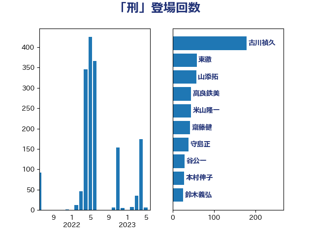

単語「刑」

| 古川禎久 | 自由民主党 | 178 回 |
| 山添拓 | 日本共産党 | 60 回 |
| 東徹 | 日本維新の会 | 59 回 |
| 上川陽子 | 自由民主党 | 48 回 |
| 高良鉄美 | 無所属 | 44 回 |
| 守島正 | 日本維新の会 | 38 回 |
| 米山隆一 | 立憲民主党 | 37 回 |
| 階猛 | 立憲民主党 | 31 回 |
| 本村伸子 | 日本共産党 | 26 回 |
| 安江伸夫 | 公明党 | 19 回 |
| 大口善徳 | 公明党 | 18 回 |
| 清水真人 | 自由民主党 | 16 回 |
| 萩生田光一 | 自由民主党 | 16 回 |
| 伊藤孝恵 | 国民民主党 | 15 回 |
| 宮本徹 | 日本共産党 | 14 回 |
| 鈴木義弘 | 国民民主党 | 13 回 |
| 前川清成 | 日本維新の会 | 12 回 |
| 鎌田さゆり | 立憲民主党 | 12 回 |
| 川合孝典 | 国民民主党 | 11 回 |
| 串田誠一 | 日本維新の会 | 10 回 |
| 津島淳 | 自由民主党 | 10 回 |
| 福島みずほ | 社会民主党 | 10 回 |
| 福重隆浩 | 公明党 | 10 回 |
| 尾崎正直 | 自由民主党 | 9 回 |
| 山田賢司 | 自由民主党 | 9 回 |
| 田村智子 | 日本共産党 | 9 回 |
| 石橋通宏 | 立憲民主党 | 9 回 |
| 吉田宣弘 | 公明党 | 8 回 |
| 斉藤鉄夫 | 公明党 | 8 回 |
| 斎藤アレックス | 国民民主党 | 8 回 |
| 葉梨康弘 | 自由民主党 | 8 回 |
| 宮崎政久 | 自由民主党 | 6 回 |
| 山田勝彦 | 立憲民主党 | 6 回 |
| 日下正喜 | 公明党 | 6 回 |
| 熊田裕通 | 自由民主党 | 6 回 |
| 田村憲久 | 自由民主党 | 6 回 |
| 西村智奈美 | 立憲民主党 | 6 回 |
| 高橋克法 | 自由民主党 | 6 回 |
| 嘉田由紀子 | 無所属 | 5 回 |
| 田所嘉徳 | 自由民主党 | 5 回 |
| 阿部弘樹 | 日本維新の会 | 5 回 |
| 倉林明子 | 日本共産党 | 4 回 |
| 和田有一朗 | 日本維新の会 | 4 回 |
| 小野田紀美 | 自由民主党 | 4 回 |
| 清水貴之 | 日本維新の会 | 4 回 |
| 藤岡隆雄 | 立憲民主党 | 4 回 |
| 谷川とむ | 自由民主党 | 4 回 |
| 鈴木馨祐 | 自由民主党 | 4 回 |
| 吉田統彦 | 立憲民主党 | 3 回 |
| 小川淳也 | 立憲民主党 | 3 回 |
| 足立康史 | 日本維新の会 | 3 回 |
| 鈴木庸介 | 立憲民主党 | 3 回 |
| 中川正春 | 立憲民主党 | 2 回 |
| 伊藤俊輔 | 立憲民主党 | 2 回 |
| 吉田とも代 | 日本維新の会 | 2 回 |
| 大岡敏孝 | 自由民主党 | 2 回 |
| 宮路拓馬 | 自由民主党 | 2 回 |
| 寺田学 | 立憲民主党 | 2 回 |
| 山下雄平 | 自由民主党 | 2 回 |
| 松野博一 | 自由民主党 | 2 回 |
| 梅村聡 | 日本維新の会 | 2 回 |
| 浮島智子 | 公明党 | 2 回 |
| 石井苗子 | 日本維新の会 | 2 回 |
| 菅義偉 | 自由民主党 | 2 回 |
| 長浜博行 | 無所属 | 2 回 |
| 中谷一馬 | 立憲民主党 | 1 回 |
| 中野洋昌 | 公明党 | 1 回 |
| 井出庸生 | 自由民主党 | 1 回 |
| 伊波洋一 | 無所属 | 1 回 |
| 伊藤孝江 | 公明党 | 1 回 |
| 加田裕之 | 自由民主党 | 1 回 |
| 塩村あやか | 立憲民主党 | 1 回 |
| 室井邦彦 | 日本維新の会 | 1 回 |
| 寺田静 | 無所属 | 1 回 |
| 小林鷹之 | 自由民主党 | 1 回 |
| 小熊慎司 | 立憲民主党 | 1 回 |
| 岩渕友 | 日本共産党 | 1 回 |
| 徳永久志 | 立憲民主党 | 1 回 |
| 新垣邦男 | 立憲民主党 | 1 回 |
| 杉田水脈 | 自由民主党 | 1 回 |
| 松沢成文 | 日本維新の会 | 1 回 |
| 枝野幸男 | 立憲民主党 | 1 回 |
| 柴田巧 | 日本維新の会 | 1 回 |
| 梅村みずほ | 日本維新の会 | 1 回 |
| 森山浩行 | 立憲民主党 | 1 回 |
| 武田良太 | 自由民主党 | 1 回 |
| 浅田均 | 日本維新の会 | 1 回 |
| 浜地雅一 | 公明党 | 1 回 |
| 玉木雄一郎 | 国民民主党 | 1 回 |
| 田名部匡代 | 立憲民主党 | 1 回 |
| 白石洋一 | 立憲民主党 | 1 回 |
| 盛山正仁 | 自由民主党 | 1 回 |
| 磯崎仁彦 | 自由民主党 | 1 回 |
| 稲富修二 | 立憲民主党 | 1 回 |
| 稲田朋美 | 自由民主党 | 1 回 |
| 竹谷とし子 | 公明党 | 1 回 |
| 篠原豪 | 立憲民主党 | 1 回 |
| 緒方林太郎 | 無所属 | 1 回 |
| 芳賀道也 | 国民民主党 | 1 回 |
| 茂木敏充 | 自由民主党 | 1 回 |
| 藤田文武 | 日本維新の会 | 1 回 |
| 近藤和也 | 立憲民主党 | 1 回 |
| 青山大人 | 立憲民主党 | 1 回 |
| 高野光二郎 | 自由民主党 | 1 回 |